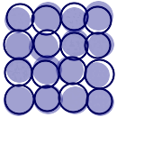
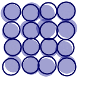

 |
 |
$ ./pppo5.opt img-97.xml | ./ppptz.opt - | ./xmgk.opt -
$ cat img-97.xml
<msl>
<image>
<merge>
<layer>
<new w='170' h='170' rgb='255,255,255' />
<for val='X' of='20 50 80 110'>
<for val='Y' of='20 50 80 110'>
<draw_circle c='_%[X],%[Y]:-3+3:-3+3' r='_15:-1+1' rgba='_0,0,127,96:-0+1:-0+1:-3+7:-3+4' />
<draw_circle c='_%[X],%[Y]:-2+2:-2+2' r='_15:-1+1' rgb_stroke='0,0,95' stroke_width='2.0' />
</for>
</for>
</layer>
</merge>
</image>
<display />
</msl>
$ ./pppo5.opt img-97.xml | ./ppptz.opt - <msl> <image> <merge> <layer> <new w="170" h="170" rgb="255,255,255" /> <draw_circle c="21,19" r="15" rgba="1,1,127,96" /> <draw_circle c="22,20" r="16" rgb_stroke="0,0,95" stroke_width="2.0" /> <draw_circle c="23,48" r="16" rgba="0,0,125,97" /> <draw_circle c="22,49" r="14" rgb_stroke="0,0,95" stroke_width="2.0" /> <draw_circle c="23,79" r="16" rgba="0,1,132,97" /> <draw_circle c="18,80" r="15" rgb_stroke="0,0,95" stroke_width="2.0" /> <draw_circle c="23,108" r="14" rgba="1,0,130,95" /> <draw_circle c="20,109" r="16" rgb_stroke="0,0,95" stroke_width="2.0" /> <draw_circle c="50,21" r="15" rgba="0,0,128,98" /> <draw_circle c="49,18" r="14" rgb_stroke="0,0,95" stroke_width="2.0" /> <draw_circle c="53,53" r="16" rgba="1,0,129,93" /> <draw_circle c="51,52" r="14" rgb_stroke="0,0,95" stroke_width="2.0" /> <draw_circle c="52,82" r="14" rgba="1,1,133,94" /> <draw_circle c="52,82" r="15" rgb_stroke="0,0,95" stroke_width="2.0" /> <draw_circle c="49,109" r="15" rgba="1,1,128,99" /> <draw_circle c="50,111" r="14" rgb_stroke="0,0,95" stroke_width="2.0" /> <draw_circle c="83,20" r="14" rgba="0,0,134,98" /> <draw_circle c="79,22" r="14" rgb_stroke="0,0,95" stroke_width="2.0" /> <draw_circle c="81,52" r="16" rgba="0,1,126,100" /> <draw_circle c="79,52" r="15" rgb_stroke="0,0,95" stroke_width="2.0" /> <draw_circle c="80,80" r="14" rgba="0,0,131,96" /> <draw_circle c="80,81" r="16" rgb_stroke="0,0,95" stroke_width="2.0" /> <draw_circle c="78,113" r="16" rgba="0,1,132,98" /> <draw_circle c="82,108" r="14" rgb_stroke="0,0,95" stroke_width="2.0" /> <draw_circle c="108,19" r="14" rgba="0,1,127,94" /> <draw_circle c="108,22" r="15" rgb_stroke="0,0,95" stroke_width="2.0" /> <draw_circle c="109,47" r="15" rgba="0,1,127,100" /> <draw_circle c="108,48" r="15" rgb_stroke="0,0,95" stroke_width="2.0" /> <draw_circle c="112,82" r="15" rgba="0,0,131,99" /> <draw_circle c="112,81" r="15" rgb_stroke="0,0,95" stroke_width="2.0" /> <draw_circle c="113,109" r="15" rgba="1,1,129,94" /> <draw_circle c="109,108" r="14" rgb_stroke="0,0,95" stroke_width="2.0" /> </layer> </merge> </image> <display /> </msl>
$ ./pppo5.opt img-97.xml <msl> <image> <merge> <layer> <new w="170" h="170" rgb="255,255,255" /> <draw_circle c="_20,20:-3+3:-3+3" r="_15:-1+1" rgba="_0,0,127,96:-0+1:-0+1:-3+7:-3+4" /> <draw_circle c="_20,20:-2+2:-2+2" r="_15:-1+1" rgb_stroke="0,0,95" stroke_width="2.0" /> <draw_circle c="_20,50:-3+3:-3+3" r="_15:-1+1" rgba="_0,0,127,96:-0+1:-0+1:-3+7:-3+4" /> <draw_circle c="_20,50:-2+2:-2+2" r="_15:-1+1" rgb_stroke="0,0,95" stroke_width="2.0" /> <draw_circle c="_20,80:-3+3:-3+3" r="_15:-1+1" rgba="_0,0,127,96:-0+1:-0+1:-3+7:-3+4" /> <draw_circle c="_20,80:-2+2:-2+2" r="_15:-1+1" rgb_stroke="0,0,95" stroke_width="2.0" /> <draw_circle c="_20,110:-3+3:-3+3" r="_15:-1+1" rgba="_0,0,127,96:-0+1:-0+1:-3+7:-3+4" /> <draw_circle c="_20,110:-2+2:-2+2" r="_15:-1+1" rgb_stroke="0,0,95" stroke_width="2.0" /> <draw_circle c="_50,20:-3+3:-3+3" r="_15:-1+1" rgba="_0,0,127,96:-0+1:-0+1:-3+7:-3+4" /> <draw_circle c="_50,20:-2+2:-2+2" r="_15:-1+1" rgb_stroke="0,0,95" stroke_width="2.0" /> <draw_circle c="_50,50:-3+3:-3+3" r="_15:-1+1" rgba="_0,0,127,96:-0+1:-0+1:-3+7:-3+4" /> <draw_circle c="_50,50:-2+2:-2+2" r="_15:-1+1" rgb_stroke="0,0,95" stroke_width="2.0" /> <draw_circle c="_50,80:-3+3:-3+3" r="_15:-1+1" rgba="_0,0,127,96:-0+1:-0+1:-3+7:-3+4" /> <draw_circle c="_50,80:-2+2:-2+2" r="_15:-1+1" rgb_stroke="0,0,95" stroke_width="2.0" /> <draw_circle c="_50,110:-3+3:-3+3" r="_15:-1+1" rgba="_0,0,127,96:-0+1:-0+1:-3+7:-3+4" /> <draw_circle c="_50,110:-2+2:-2+2" r="_15:-1+1" rgb_stroke="0,0,95" stroke_width="2.0" /> <draw_circle c="_80,20:-3+3:-3+3" r="_15:-1+1" rgba="_0,0,127,96:-0+1:-0+1:-3+7:-3+4" /> <draw_circle c="_80,20:-2+2:-2+2" r="_15:-1+1" rgb_stroke="0,0,95" stroke_width="2.0" /> <draw_circle c="_80,50:-3+3:-3+3" r="_15:-1+1" rgba="_0,0,127,96:-0+1:-0+1:-3+7:-3+4" /> <draw_circle c="_80,50:-2+2:-2+2" r="_15:-1+1" rgb_stroke="0,0,95" stroke_width="2.0" /> <draw_circle c="_80,80:-3+3:-3+3" r="_15:-1+1" rgba="_0,0,127,96:-0+1:-0+1:-3+7:-3+4" /> <draw_circle c="_80,80:-2+2:-2+2" r="_15:-1+1" rgb_stroke="0,0,95" stroke_width="2.0" /> <draw_circle c="_80,110:-3+3:-3+3" r="_15:-1+1" rgba="_0,0,127,96:-0+1:-0+1:-3+7:-3+4" /> <draw_circle c="_80,110:-2+2:-2+2" r="_15:-1+1" rgb_stroke="0,0,95" stroke_width="2.0" /> <draw_circle c="_110,20:-3+3:-3+3" r="_15:-1+1" rgba="_0,0,127,96:-0+1:-0+1:-3+7:-3+4" /> <draw_circle c="_110,20:-2+2:-2+2" r="_15:-1+1" rgb_stroke="0,0,95" stroke_width="2.0" /> <draw_circle c="_110,50:-3+3:-3+3" r="_15:-1+1" rgba="_0,0,127,96:-0+1:-0+1:-3+7:-3+4" /> <draw_circle c="_110,50:-2+2:-2+2" r="_15:-1+1" rgb_stroke="0,0,95" stroke_width="2.0" /> <draw_circle c="_110,80:-3+3:-3+3" r="_15:-1+1" rgba="_0,0,127,96:-0+1:-0+1:-3+7:-3+4" /> <draw_circle c="_110,80:-2+2:-2+2" r="_15:-1+1" rgb_stroke="0,0,95" stroke_width="2.0" /> <draw_circle c="_110,110:-3+3:-3+3" r="_15:-1+1" rgba="_0,0,127,96:-0+1:-0+1:-3+7:-3+4" /> <draw_circle c="_110,110:-2+2:-2+2" r="_15:-1+1" rgb_stroke="0,0,95" stroke_width="2.0" /> </layer> </merge> </image> <display /> </msl>